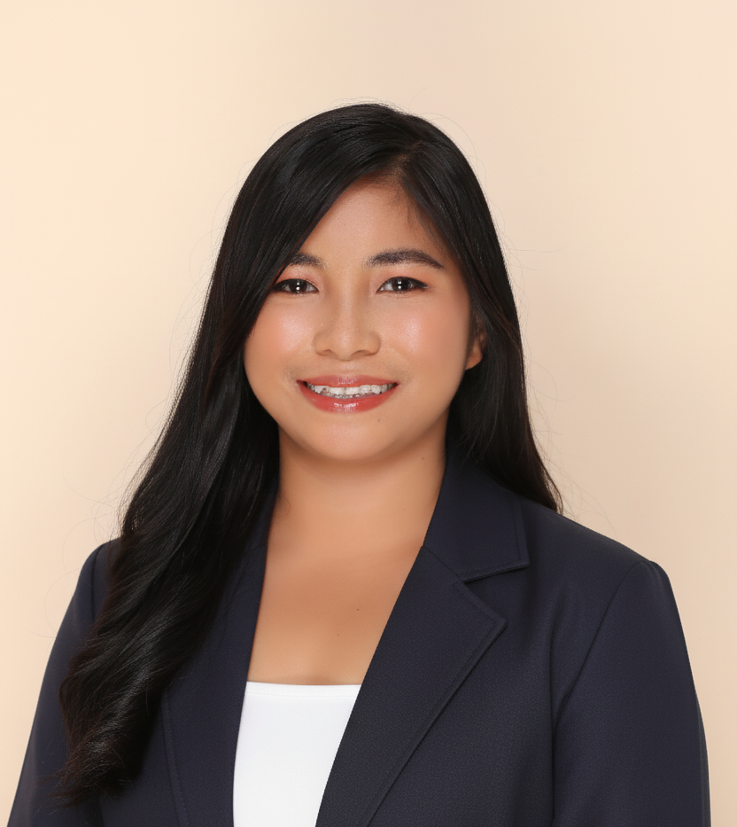

Leonyfel J. Castriciones

Objective
Dedicated and passionate BSED-Mathematics graduate seeking a position to broaden my knowledge,
particularly in terms of communication skills.
Education
- Bachelor of Secondary Education Major in Mathematics
Bohol Island State University - Candijay Campus
Year: 2024-2025
Professional History
- Lakeside View Cottage Inn (Staff)
April 2019- May 2019
- Cleaning the guest rooms and the area surrounding us.
- Taking meal orders, serving food, processing payments, and clearing tables.
- Department Bank of the Philippines(Immersion)
February 2020– March 2020
- Deal with the clients.
- Do some transactions.
- Funtea House (Staff)
February 2021-May 2021
- Taking food orders, serving food, processing payments, and clearing tables.
- Invytes Bistro (Staff)
April 2024-August 2024
- Taking food orders, serving food and clearing tables.
- Candijay National High School (Student Intern)
January 2025-March 2025
- Teaching Students
- Created and implemented lesson plans in alignment with the curriculum.
Skills
- Communication Skills
- Computer literate
- Microsoft office
- Willingness to learn
Achievements and Certifications
- Classroom Officers Since Junior to Senior High
Nueva Vizcaya General Comprehensive High School and Candijay National High School
Year 2015-2020
- Representatives SSG Officers
Candijay National High School
Year 2019-2020
- DLC Officers (President)
Candijay National High School
Year 2019-2020
- IYAAH Association Officers (Auditor)
Tugas, Candijay, Bohol
Year 2021-2022
- Supreme Student Government (Secretary of Environment)
Bohol Island State University-Candijay Campus
Year 2022-2023
- Supreme Student Government(Senator)
Bohol Island State University-Candijay Campus
Year 2023-2024
- Mathematics Students’ Organization(MIO)
Bohol Island State University-Candijay Campus
Year 2023-2024
- Basic CCA and ESL Training
Clairvoyance E-learning Academy
January 31- February 4, 2022
- Gender Sensitivity and Leadership Training
BISU’s Gender and Development Office of SSG
December 1-2, 2022
- Leadership Training and Workshop
Bohol Island State University-Candijay Campus
December 9-10, 2022
- 15th Student-Teachers' Congress
Bohol Wisdom School
April 5, 2025
Other